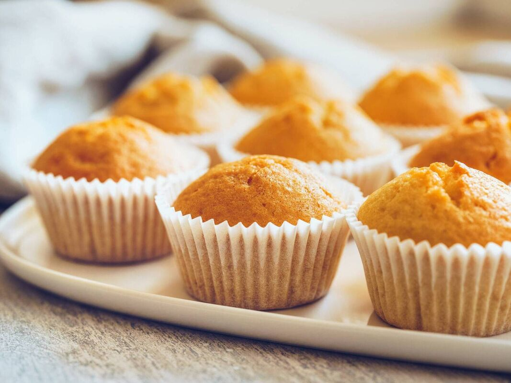

Home Page
Fairy Cakes Recipe

Description
The nostalgic fairy cakes, one of the first things any baker makes. Small bite sized pieces, easy to demolish.
Ingredients:
- 125g Self Raising Flour
- 125 Sugar
- 125 Butter
- 1 tsp Baking Powder
- 1 tsp Vanilla Extract
- 2 tbsp milk
Method:
- Add the flour sugar and butter and whisk away
- Add the 2 eggs and whisk more
- Add the baking powder, vanilla extract and milk and whisk further
- Use a baking tray and split evenly into 12. Maximum is about 3/4 as they rise
- Bake eat 180 for 10 minutes